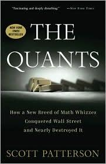

斯科特·帕特森（Scott Patterson）是《华尔街日报》的资深记者，长期驻守华尔街，以近距离观察金融市场运作为业。《宽客》（The Quants）出版于2010年，是他的处女作，也是迄今最为生动翔实的一部量化交易崛起史。"宽客"（quant）是"量化分析师"（quantitative analyst）的俗称，指那些将数学、物理和计算机模型引入金融市场的一类人——他们通常来自名校理工科背景，发现金融市场中充满了普通人难以察觉的统计规律，并将这些规律转化为可以系统执行的交易策略。
帕特森以四位主角为叙事核心：摩根士丹利的彼得·穆勒（Peter Muller）、城堡投资集团的肯·格里芬（Ken Griffin）、AQR资本的克里夫·阿斯内斯（Cliff Asness）和德意志银行的波阿兹·韦恩斯坦（Boaz Weinstein）。他们的从业轨迹各不相同，却共同分享了一个时代的信念：只要模型足够复杂、数据足够充分、杠杆足够大，市场的无效性就可以被系统性地套利。在21世纪初的头几年，这一信念看起来无懈可击——他们的基金规模飞速膨胀，个人财富积累速度令人咋舌，整个华尔街开始向他们靠拢，争相引入量化模型。
2007年8月，这场盛宴突然中断。"宽客崩溃"（Quant Quake）在短短数天内让多家对冲基金遭遇了前所未有的巨额损失——不是因为某个宏观经济事件，而是因为大量使用相似模型的基金在同一时间去杠杆，形成了自我强化的恐慌性踩踏。这一事件揭示了量化模型最深刻的内在悖论：当所有人都相信同一套规律，并用同一套工具去利用它，那套规律本身就会在集体行为的冲击下失效。帕特森将2007年的宽客崩溃与2008年次贷危机的全面爆发放在同一个叙事框架下审视，深刻揭示了过度依赖模型的机构性脆弱。
本书甫一出版便登上《纽约时报》畅销书榜，主持人乔恩·斯图尔特（Jon Stewart）在脱口秀节目中盛赞其为"令人难以置信"（"unbelievable"）之作。《宽客》是理解现代金融体系内在逻辑与脆弱性的重要读物，也是一部关于人类智识骄傲与市场现实之间永恒张力的警示录。对于关注量化投资、系统性金融风险，以及2008年金融危机深层机制的读者，这本书提供了无可替代的内部视角。